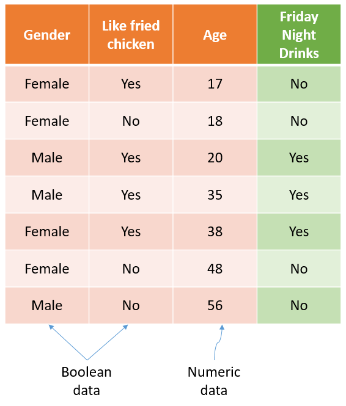

How does Decision Tree work?
06/11/2022
The Decision Tree algorithm is a member of the supervised learning algorithm family. Unlike other supervised learning algorithms, the decision tree algorithm can be used to solve both regression and classification problems.
+ In general, a Decision tree make a statement and then makes a decision based on whether or not the statement is True or False.
+ A Decision tree composes of a root node (or the root) at the very top of the tree, several internal node (or branches) with arrows pointing to and away from them and several leaf nodes (or leaves) with an arrow pointing to each of them.
+ To understand how a Decision tree works, let's take a look at a simple example below:

+ The example data composes of 4 columns with each row holds the information about a person including gender, age and whether that person like to eat fried chicken and and finally want to drink on friday night.
+ There are 2 type of data in this table: numeric data (age) and boolean data (gender, like fried chicken and want to drink on friday night).
+ We will use the first 3 columns (Gender, Age and Like fried chicken) to predict whether a person want to hava a drink on friday night.
✓ Step 1: we need to decide which variable (Gender, Age or Like fried chicken) should be on top of the tree or which question we need to ask first.
• To do so, we first examine how well each variable predicts Friday night drinks. As shown in the graph below, Like fried chicken appears to be more predictive of who will and will not have a drink on Friday nights than Gender, because both of leaves in Gender is impure while only one leaf in Like fried chicken is impure.
• We can quantify the impurity of each variable using a method called Gini impurity. There are also several different method i.e., Entropy and Information gain. All of them are quite similar. The equation to calculate Gini impurity is shown in figure below.
• However, there is still a variable that we did not consider yet i.e., Age. This variable is different from the other two, which are numeric variables, making calculating of gini impurity of this variable a little complicated. To calculate the gini gini impurity of Age, we first need to sort it from lowest to highest value. Next, we need to calculate the average age for all adjacent people. Finally, the gini impurity will be calculate for each average age. The lowest gini impurity will be selected as the gini impurity representing the gini impurity of Age.